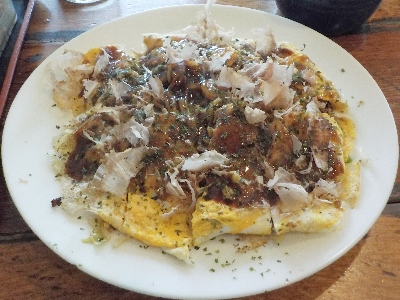

カチャカチャの特製カチャカチャスペシャル焼き。
2025/03/02

特製にスペシャルか付いた特別な感じのお好み焼き1150円です。肉、玉子、生イカ、生エビ、そば入りです。
とっても美味しい。そして量が多いのでお腹いっぱいで幸せでした。
マヨネーズを部分的に付けて味見したんですが、マヨネース味が強く感じるので私はいらないと思いまた。
テーブルにソースが置いてあったので追加でかけてみたんですが、濃くなりすぎたので最初の状態が一番美味しいかなと思いました。
島根県出雲市園町1412-1
2025/03/02

特製にスペシャルか付いた特別な感じのお好み焼き1150円です。肉、玉子、生イカ、生エビ、そば入りです。
とっても美味しい。そして量が多いのでお腹いっぱいで幸せでした。
マヨネーズを部分的に付けて味見したんですが、マヨネース味が強く感じるので私はいらないと思いまた。
テーブルにソースが置いてあったので追加でかけてみたんですが、濃くなりすぎたので最初の状態が一番美味しいかなと思いました。